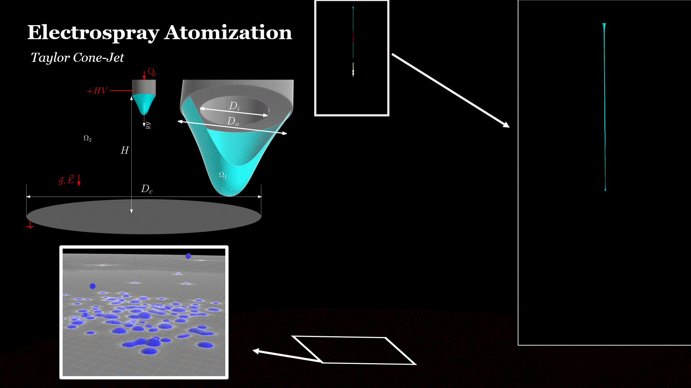

4.3. Electrospray Plume Formation
Electrospray atomisation involves several widely separated length scales. The Taylor cone and continuous liquid jet must be resolved as deformable interfaces, whereas the diameter of the emitted droplets may be more than two orders of magnitude smaller than the overall spray domain.
Resolving the complete plume using only a Volume-of-Fluid method would therefore require a very fine mesh throughout the domain. Instead, the present EHD-VoF-LPT approach combines interface-resolved simulation with Lagrangian particle tracking.
The VoF model resolves the Taylor cone, the continuous jet and its primary breakup. Once detached droplets become sufficiently small, nearly spherical and electrically stable, they are converted into Lagrangian parcels and tracked through the spray plume.
4.3.1. Hybrid EHD-VoF-LPT Approach
The Eulerian VoF region describes the two-phase liquid-gas flow, including surface tension, electric-charge transport and the electric forces obtained from the Maxwell stress tensor.
Detached liquid structures are identified from the phase fraction field. Their volume, equivalent diameter, centre-of-mass position, velocity and electric charge are calculated before conversion.
A droplet is converted only when it satisfies three main conditions:
- its diameter is smaller than a prescribed maximum;
- its shape is sufficiently close to spherical;
- its electric charge remains below the Rayleigh limit.
Droplets that remain strongly deformed or electrically unstable continue to be resolved with VoF.

4.3.2. Droplet-to-Particle Conversion
The equivalent droplet diameter is calculated from its resolved liquid volume:
where \(V_p\) is the volume of the detached liquid structure. A geometric criterion is used to prevent highly deformed droplets from being represented as point particles.
The electric charge is also checked against the Rayleigh limit:
Here, \(q_R\) is the maximum stable charge, \(\varepsilon_0\) is the vacuum permittivity, \(\gamma\) is the surface-tension coefficient and \(d_p\) is the droplet diameter. If the droplet charge exceeds this limit, electrostatic repulsion can overcome surface tension and the droplet must remain interface resolved.
4.3.3. Lagrangian Plume Dynamics
After conversion, the droplets are tracked as charged Lagrangian parcels. Their trajectory is obtained from the balance of aerodynamic, gravitational and electrostatic forces:
The electric contribution is
where \(m_p\), \(\mathbf{u}_p\) and \(q_p\) are the parcel mass, velocity and electric charge, and \(\mathbf{E}\) is the local electric field.
The axial electric field accelerates the droplets towards the collector, while mutual electrostatic repulsion and radial field components promote the expansion of the plume. Aerodynamic drag opposes the relative motion between the droplets and the surrounding gas.

4.3.4. Multiscale Electrospray Simulation
The hybrid formulation provides a continuous description of the atomisation process across the main electrospray regions:
- Taylor cone formation;
- continuous liquid-jet development;
- primary breakup into charged droplets;
- VoF-to-LPT conversion;
- transport and expansion of the spray plume.
The main advantage is that interface resolution is retained where liquid deformation and breakup are important, while the much less expensive Lagrangian description is used for the large population of small droplets in the far plume.